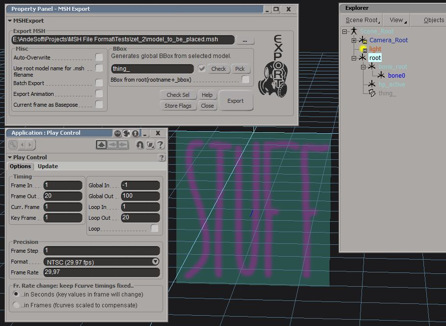
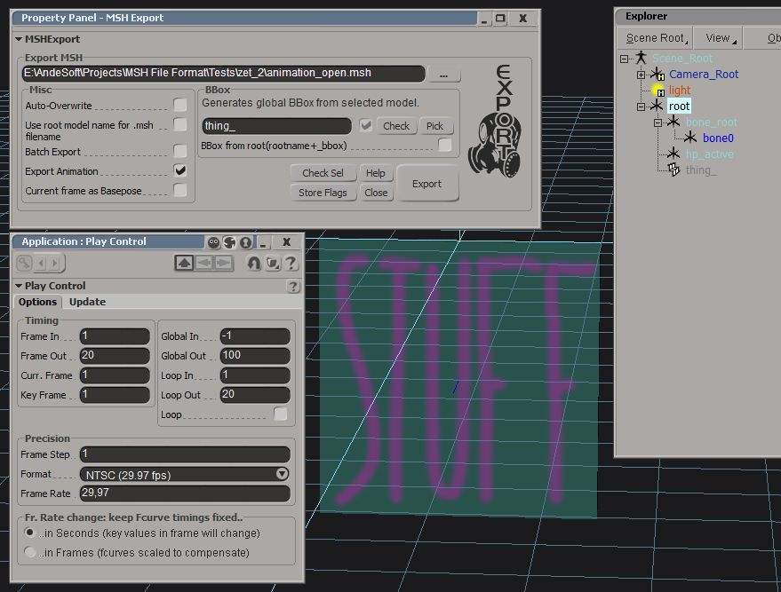
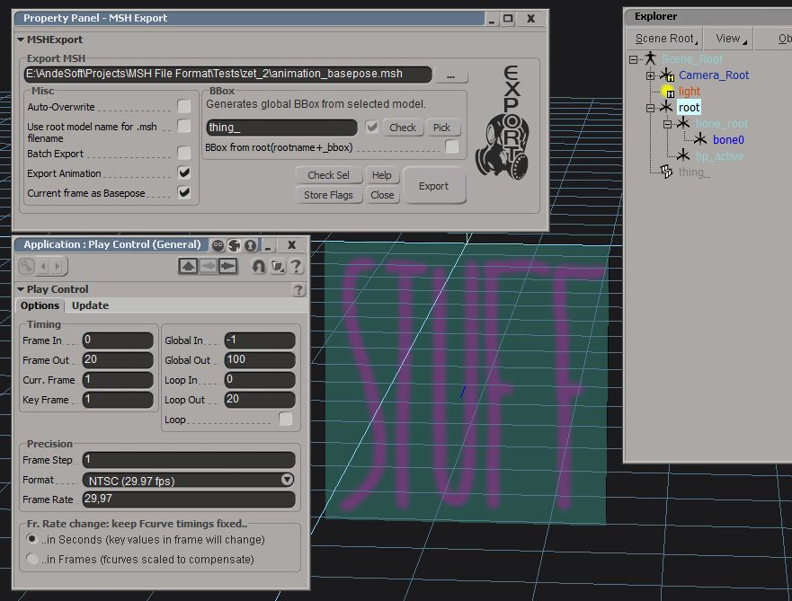

Main Info
XSIZETools is an addon for Softimage (tested with ModTool 7.5, 2012 SP1 and 2014). The main features are full export and import of 3D .msh files for ZeroEngine (Star Wars Battlefront I and II). That includes geometry, materials with all ZeroEngine-specific flags, animations and collisions.
This began as a small collection of scripts to help setup hierarchies and the like and turned into a full-fledged exporter/importer for the .msh format. As only a small amount of the .msh file format structure was known when I began writing the exporter I had to reverse-engineer (with contributions from a handful of other people) the rest (which was about 70% of the chunks).
Download & Installation
The main chunk of the project is hosted on GitHub. The source for the Geometry Accessor Wrappers can be found on the sidebar (the source is outdated though as I lost the code used for the current DLLs. Check the sidebar for a link to the releases page on GitHub.
To install ZETools, unzip the downloaded archive into
C:/users/%user%/Autodesk/Softimage_%version%/Addons/
OR
C:/users/%user%/Softimage/Softimage_%version%/Addons/.
Make sure you use this path and not the factory addon path.
If you have any Softimage version up to (and including) 2010 you need to install python and pywin32. If python and pywin32 was installed correctly it should look something like this.
{kind=link}
The low-level geometry functions are written in C++, so the Visual C++ 2010 redist is required. x86 | x64 (only if x86 didn't work).
Contributors
ME (ANDEWEGET/Ande)
All programming | Graphics/UI | Main .msh file research
AceMastermind (gametoast.com)
Created most templates | Provided example .msh files | Additional .msh research
DarthD.U.C.K (gametoast.com)
Created some templates | Provided example .msh files | Additional .msh research
tirpider (gametoast.com, swbfgamers.com)
Additional .msh research | MSH Info Tool greatly helped with debugging | Interesting discussions
FragMe! (gametoast.com)
Provided a tool/material for some additional research
Export Guidelines
- Error Checking: The CheckSel function in the export dialog can detect some problems.
- Exported Objects: The currently selected object + all it's children will be exported.
- Overlapping clusters: Might break the .msh file. Might mess up the exported .msh's UVs/Weights/Vertex Colors.
- 5-Sided(or more) Polygons: Might break the .msh file. Will mess up export result(missing polies).
- Supported Model Types: The supported model types are: poly mesh, null, bone.
- UV: Only apply one 'master' UV projection to a object. All subsequent projections should be Sub-projections.
- Collision: Collision meshes can be created by naming the model collision_* or *_collision.
- Collision: For XSI ZETools to recognize collision primitives the name needs to contain the type of primitive (cube, cylinder, sphere).
- Collision: Do not freeze any primitives, freezing will remove essential information.
- Animation: It's not important how you animate bones (FK or IK etc), the exporter will go through all frames one-by-one and get the current local transforms of every bone.
- Always apply the envelope to ALL bones. This might slow your workflow down but it ensures the points are weighted to the correct bone after export.
- Weighting: Only weight to objects with bone in their name(NOT: root, eff).
- Weighting: Try to apply the envelope only to models which won't be merged after weighting. This does not have to break the .msh, it could though.
- No Materials: You should have at least one material named Scene_Material when exporting. If you have at least one material you don't need Scene_Material.
- Material/Render flags are applied per material. You can apply them by opening the ZETools Material Manager, selecting a material and then clicking "ZE-ify". This will add all the ZeroEngine material flags to the material. Afterwards inspect your material (click the "Edit" button) and change those settings in the appended options.
Import Guidelines
- Animation: Animations will be imported as linear animations on a per-frame basis.
- Animation: It should be possible to re-export animations directly after import. For SWBF1 you need to have at least one material though.
- Geometry: There might be some misplaced edges.
Cloth Guidelines
- Geometry: Try to avoid triangles in the cloth mesh. There's a high change triangles might produce artifacts in the cloth simulation.
- UV/Cloth Splits: Cloth will be split along UV seams, so UV accordingly.
- Error Reporting: If you have problems with cloth simulation artifacts, provide a screenshot from the debug SWBF.exe with "render_cloth_connections" enabled via the console.
Scripts
- Create Bone Group
Creates a group of all objects which have 'bone' in their name. If you have a SWBF2 skeleton in your scene this will group all bones you need to envelope to. - Addon Mesh Setup
Creates an addon mesh hierarchy, by creating a null (named like the Addon Root text box) and matching its position and rotation to the selected Addon Bone. You can then move the currently selected object(s) into the hierarchy by pressing Set As Addon Mesh.
Export Documentation
- Auto-Overwrite. Overwrites any output files if they already exist.
- Use root model name for .msh file name. Will use the name of the topmost object in the currently selected hierarchy as the .msh file name. Has to be enabled when Batch Exporting.
- Batch Export. Exports all children of the currently selected object as a full hierarchy.
- Export Animation. Exports animation for the current frame range.
- Current Frame as Basepose. Exports only the currently selected and following frame to minimize file size.
- Check Sel. Loops through all objects in the currently selected hierarchy and analyzes it for problems which could cause a bad export.
- Check Sel: Bad model type. Only nulls, bones and polygon meshes should be used.
- Check Sel: Bad Faces. Faces should not have more than 4 sides. To fix use Modify>PolygonMesh>Triangulate or Select>Select n-sided polygons>Five sides or more.
- Check Sel: Bad Clusters. Overlapping clusters, should be fixed.
- Check Sel: Unnecessary clusters. Do not need to be fixed, just warnings.
- Store Flags. Stores the current export configuration (path, check boxes etc).
Import Documentation
- Texture Folder. If the textures for the to-be-imported .msh file are not located in the same folder as the .msh file.
- Set Frame Range. Will set the frame range to that stored in the .msh file.
- Apply animation to selected hierarchy. If you have already imported a .msh file (like a unit) then you can apply an animation stored in another .msh file to the previously imported mesh (root of that hierarchy must be selected).
- Null Display Size. Set the display size of nulls.
- Ignore Geometry. Will replace any meshes with nulls, use this if you are applying an animation to a hierarchy.
- Ignore Animation. Ignores any animation. Use this if you are importing baseposes to later apply animations (and just generally if you do not need the animation).
- Color Nulls. Will color nulls if the importer can find out which type they are (bones, effs and roots).
- Hide Roots/Effectors. Will hide roots and effectors in the hierarchy so they are not accidentally animated.
- Wield Boundary Edges. Imported meshes usually have splits along the UV seams. This option will wield any of these edges after geometry import.
- Store Flags. Stores the current import configuration (path, check boxes etc).
- Triangulate. Triangulates any quads or more-sided polygons on import.
- Log. Logs the MSH unpack (can be slow).
Material Manager Documentation
- Create. Creates a new Phong material with the name in the box to the left of the button.
- Edit. Will inspect the currently selected material for editing.
- ZEify. Will add ZeroEngine specific material and shader settings to the selected material(s). This lets you add features like scrolling textures, glow, bump mapping and many more.
For more information on render types look here. Textures listed under Additional on that page will need to be put into the Texture 1-3 slots. - De-ZEify. Removes ZeroEngine specific settings.
- Remove. Deletes the currently selected material(s).
- Assign Tex. Opens a dialog to assign a color/diffuse texture to the selected material.
- Assign. Assigns the currently selected material to the currently selected component/object in the scene.
- Unassign. Unassigns the material.
MSH2TXT
Model Types
- null: Dummy object without segments.
- geodynamic: Geometry with envelope and modifiers.
- cloth: Cloth (ClothGeometry segments).
- bone: Animated null.
- geobone: Animated geometry (only SegmentGeometry segments).
- geostatic: Standard geometry, no envelope or deformers.
- geoshadow: Shadow geometry (ShadowGeometry segments).
File Structure and Naming Conventions
MSH Name = name
name .txt
bool has_shadowvolume: Does this .msh have a shadowvolume (SHDW)?
name nfo.txt
string name: Scene Name
float[2] frame_range: Start Frame, End Frame
float fps: Scene FPS
float[3] scale: Scene scale
BBox bbox: Scene BBox
For every Model:
name mdl model_name .txt
string name: Model Name
string parent: Parent Name
string model_type: One of the available Model Types
int visible: 1 == visible, 0 == hidden
bool collprim: Is this model a collision primitive?
[int, float, float, float] primitive: Primitive type, value 0, value 1, value 2
int num_deformers: Number of deformers on save, ignored when loading
string[] deformers: Deformer names
BBox bbox: Model BBox
Transform transform: Model Transform
For every segment (SEGM/CLTH/SHDW) in the models geometry:
name mdl model_name seg #_of_segment .txt
SegmentGeometry:
string type: SegmentGeometry | ShadowGeometry | ClothGeometry
string material: Material name
int num_vertices: Number of vertices on save, ignored when loading
Vertex[] vertices: Segment vertices
int num_faces: Number of faces on save, ignored when loading
Face[] faces: Segment facesShadowGeometry:
string type: See above
int num_positions: Number of positions on save, ignored when loading
float[3][] positions: Positions, currently only used to store the information
int num_faces: Number of faces on save, ignored when loading
Face[] faces: Faces, currently only used to store the informationClothGeometry:
string type: See above
string texture: Cloth texture
int num_vertices: Number of vertices on save, ignored when loading
ClothVertex[] vertices: Cloth vertices
int num_faces: Number of faces on save, ignored when loading
int[2][] stretch: Stretch constraint value pairs
int[2][] cross: Cross constraint value pairs
int[2][] bend: Bend constraint value pairs
ClothCollision[] collisions: Collisions
For every Material:
name mtl material_name .txt
string name: Material name
int index: Initial index on save, recalculated on load
string tex0: Diffuse texture
string tex1: Special texture 1
string tex2: Special texture 2
string tex3: Special texture 3
Flag[8] flags: [string name, bool active, int enum_value]
int render_type: Render type
int data0: Shader data 0
int data1: Shader data 1
Color diffuse: Diffuse color
Color specular: Specular color
Color ambient: Ambient color
float gloss: Gloss value
Structs
BBox
float[3] rotation: Rotation in degrees
float[3] extents: BBox extents
float[3] center: BBox center
float radius: BBox radius
Transform
float[3] rotation: Rotation in degrees
float[3] position: Position
float[3] sacle: Scale
Color
float[4] rgba: Channel values (0.0 to 1.0)
OR
int[4] rgba: Channel values (0 to 255)
Vertex
float[3] position: Position in world space
float[2] uv: UV coordinate
float[3] normal: Vertex normal
string[4] deformers: Deformers for this vertex
float[4] weights: Weights for the corresponding deformer
Color color: Vertex color
Face
int[] vertices: Indices to the vertices forming this polygon
ClothVertex
float[3] position: Position in world space
float[2] uv: UV coordinate
string deformer: Joint this point moves with
bool is_fixed: If true, does not get simulated and moves with deformer (if it exists)
ClothCollision
Collapsestring name: Collision name
string parent: Parent of the collision object
int unknown_long: Unknown purpose
float[3] collision_primitive: [value 0, value 1, value 2]
Animation Export
Every of the following steps will produce one .msh file.
SWBF 1 NOTE: The ZenAsset.exe which comes with the SWBF1 mod tools seems to need at least one material to work. Just add a small primitive(eg: cube, you can hide it, too) to the scene. It needs to be in the exported hierarchy for animations so don't move it out when you do the HALFSTEP. To minimize filesize you could replace one of the needed nulls with the primitive(maybe dummyroot). Sereja got his animation into SWBF1 by using a textured primitive as DummyRoot. It's not important what type of model the other models are.
STEP 1. Placeable model for ZeroEditor. Export the model which will be called in the odf and placed in ZE. To do this move the frame cursor to the first frame of your animation(usually 1, it's not important what the frame range is[ie 0 to 100]).Then select your root, uncheck Export Animation and export. .MSH File: stuff_door.msh
 Animation preparation. To cut down on possible problems you can now drag'n'drop all object which are not a part of the skeleton(collisions, meshes, shadows) out of your current hierarchy. Best way to do this is select them all and drag'n'drop them onto Scene_Root. In my example I only move out thing_(that's the model with Stuff painted on it). You can move out hard points, too. Animations don't need this as basepose and open/whatever you called your animation will end up in .zafbin/.zaabin files which don't hold geometry etc. Note: I forgot to move out thing_ for the main animation in the screenshot at step 2. It should be not be a (direct or indirect) children of the root you're exporting though.
STEP 2. Animation Export This will contain the actual animation. Here it's important to set the right frame range. It's not important where the frame cursor is, but the frame range must be correct. In my example it's 1 - 20. Check Export Animation and export button. .MSH File: ie open.msh

STEP 3. Basepose of the animation. This will be the pose the model is in when it's not animated. If your first frame is 1 move the frame cursor to frame 0. Check Export Animation and Current frame as Basepose. If you check Current frame as Basepose you can ignore the last frame. If you want to do it 'old-fashioned' set your frame range to 0 - 1 and uncheck Current frame as Basepose. I assume you use the Current frame as Basepose way. Now the preparation is finished. All boxes are checked and the hierarchy is set up. Do the deed and select your root and hit export. .MSH File: basepose.msh
Collapse